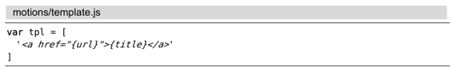
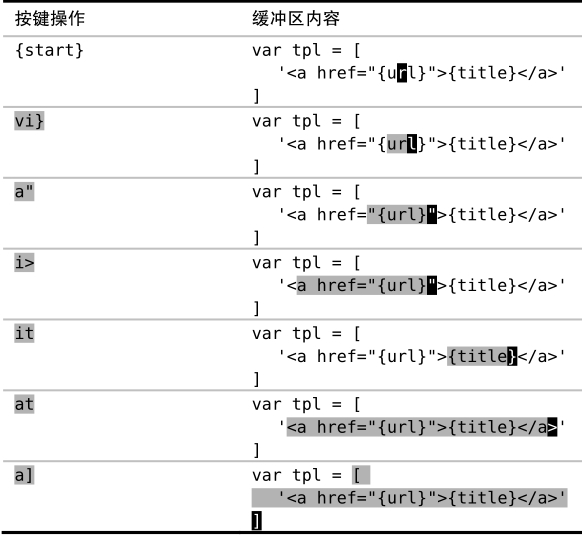
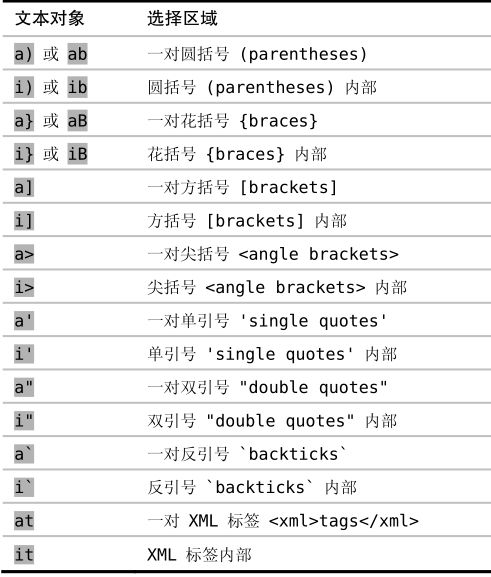
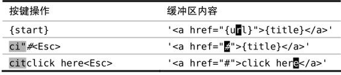
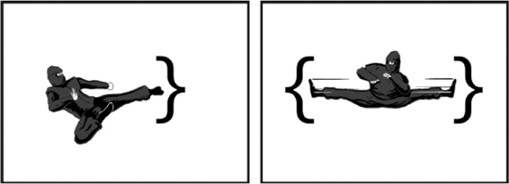

）。通过使用文本对象，我们只需几个键就可以选择或操作一大段文本。
）。通过使用文本对象，我们只需几个键就可以选择或操作一大段文本。技巧51用精确的文本对象选择选区
文本对象允许我们操作括号、被引用的文本、XML标签以及其他文本中的常见结构。
先看看下面的示例代码：

在上面的代码中，每个开括号字符 { 都对应一个闭括号字符 }， [ 和 ] 、<和>，以及HTML标签 <a>和</a>也是一样。这段代码中也包含单引号及双引号，它们也是成对出现的。
这些配对符号具有规整的格式，而Vim 能够理解其结构，并允许对它们所分隔的区域进行操作。文本对象就是基于结构定义的文本区域（参见:h text-objects）。通过使用文本对象，我们只需几个键就可以选择或操作一大段文本。
假设光标位于花括号内部，而我们想高亮选中{}内部的文本，那么就可以用vi}：

一般情况下，当我们使用可视模式时，选区的一端固定在一个特定字符上，而另一端可以自由移动；当我们使用l、w及f{char}这类动作命令时，会对高亮区域的活动端进行移动，使选区变大或缩小。
但此处发生的情况却截然不同。当我们按下vi}时，Vim 会进入可视模式，并选中花括号 {} 所括起来的所有字符。光标放在哪儿都没关系，只要在调用i}文本对象时，光标在花括号内部就行了。
我们也可以用其他的文本对象来扩大选区。例如，a”会选中由双引号括起来的字符范围，而i>则会选中一对尖括号内的所有内容。
Vim 的文本对象由两个字符组成，第一个字符永远是i或是a。我们一般说，以i开头的文本对象会选择分隔符内部的文本，而以a开头的文本对象则会选择包括分隔符在内的整个文本。为了便于记忆，可以把i想成“inside”，而把a想成“around”或“all”。
再看一遍上面的例子，仔细体会一下文本对象是以i开头还是以a开头，特别需要注意的是it与at之间的区别。另外也要留意一下，在此例中a]将选区扩展到了多行。
表8-1总结了部分 Vim 内置的文本对象。出于整洁起见，表中省略了一些重复的文本对象。例如，i(和i)等同，a[和a]也相同，你可以使用最适合自己的那种风格。
表8-1 分隔符文本对象

用文本对象执行操作
可视模式适用于介绍文本对象，因为可以很容易看到发生的变化。然而，在操作符待决模式中使用文本对象，才能真正展现出它们的强大能力。
文本对象自身并不是动作命令，我们不能用它们在文档中移动。但是我们却可以在可视模式及操作符待决模式中使用文本对象。记住：每当在命令语法里看到{motion}时，你也可以在这个地方使用文本对象，常见的例子包括d{motion}、c{motion}和y{motion}（更多命令，请参见表2-1）。
让我们以c{motion}命令为例进行讲解。此命令会删除指定的文本，然后切换到插入模式（:h c）。我们将用它把下面文本中的 {url}替换为 #，然后再用一个文本标记把{title}替换掉：

我们可以把ci"命令解读为“修改双引号内部的内容”，把cit命令解读为“修改标签内部的内容”。另外，我们也可以很容易地用yit命令拷贝标签内的文本，或者是用dit删除这些文本。
结论
这些命令都只需要3次按键，它们不仅简洁，而且使用方便，甚至也可以说这些命令都是自描述的（self-documenting）。之所以这样，是因为它们都采用了技巧12中提到的简单语法规则。
在技巧49和技巧50中，我们学到了一些让我们精确移动光标的诀窍。不管是用f{char}查找单个字符，还是用/target<CR>查找若干字符，其工作模式都是一样的。我们先寻找合适的目标，瞄准，然后开火。如果做得好的话，一次移动就能命中目标。这些强大的移动功能允许我们花很少的力气就可以覆盖很大的区域。
而文本对象则更进一层。如果说f{char}和/pattern<CR>命令如同单足飞踹，那么文本对象则像是一次攻击两个目标的剪刀腿，如图8-1所示。

图8-1 Vim强大的移动功能可以做到非常精确